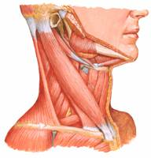

Torcicolo
Enrijecimento dos músculos do pescoço.
Estabilidade da coluna cervical
Estabilidade da coluna cervical
Esta estabilidade é dada por um imenso conjunto de ligamentos, que permitem a limitação dos movimentos. Assim temos:
- Ligamento longitudinal anterior (L. L. A.): limita a extensão e reforça a porção anterior do anel fibroso;
- Ligamento atlantoaxial anterior (continuação do L. L. A.): limita a extensão;
- Ligamento longitudinal posterior: limita a flexão e reforça a porção posterior do anel fibroso;
- Ligamento amarelo: limita a flexão;
- Ligamento nucal (continuação do Ligamento supraespinhoso): limita a flexão;
Fig. 3 – Ligamentos craniocervicais externos – Vista lateral direita
- Ligamento atlantoaxial posterior (continuação do Ligamento amarelo): limita a flexão;
- Membrana tectorial (continuação do L. L. P.): limita a flexão;
- Ligamento intertransverso: limita a rotação da cabeça para o lado homolateral e flexão lateral ou inclinação para o lado contralateral;
- Ligamento alar: limita a rotação da cabeça para o lado homolateral e flexão lateral ou inclinação para o lado contralateral;
- Ligamento interespinhoso: limita a flexão.
Movimentos do Pescoço
A coluna cervical permite movimentos em três eixos e três planos de movimentos. São eles: flexão/extensão, inclinações e rotações.

Fig. Vértebras cervicais C1 a C4 – Vista póstero-superior
A coluna cervical possui 7 vértebras, constituindo as 2 primeiras – atlas e áxis * (C1 e C2, respectivamente) a coluna cervical superior e as 5 restantes (C3 a C7) a coluna cervical inferior.
Musculatura
A coluna cervical encontra-se também provida de diversos músculos, com funções muito específicas.

Fig. – Músculos do pescoço – Vista lateral
Temos diversos músculos no compartimento anterior, cuja contracção permite diferentes movimentos. Assim:
- Esternocleidomastoideu faz flexão, inclinação homolateral e rotação contralateral;
- Músculo longo do pescoço faz flexão e inclinação homolateral;
- Grande recto anterior da cabeça faz flexão e inclinação homolateral;
- Pequeno recto anterior da cabeça faz flexão, rotação e inclinação homolateral;
- Recto lateral faz ligeira inclinação homolateral;
- Escalenos fazem inclinação e rotação homolateral e elevação das duas primeiras costelas.
Fig. – Músculos do pescoço – Vista anterior
Quanto ao compartimento posterior temos:
- Músculos suboccipitais (Grande recto posterior da cabeça, Pequeno recto posterior da cabeça, Grande oblíquo da cabeça, Pequeno oblíquo da cabeça, Músculos interespinhoso) que fazem inclinação e extensão da cabeça;
- Trapézio faz extensão, inclinação homolateral e rotação contralateral;
- Esplénios fazem extensão, inclinação e rotação homolaterais;
- Angular da omoplata faz extensão, inclinação e rotação homolaterais;
- Grande complexo faz extensão e ligeira inclinação homolateral;
- Pequeno complexo faz extensão e inclinação homolateral;
- Transversal do pescoço faz extensão e inclinação homolateral.